# 라운드 1 — 2026-10-22 11:42 평균 점수(C, 1~5): **3.12** · 비용 $1.241 · 얼굴 잘림 17 | 유형 | 평균 | A 나음 | C 나음 | 같음 | |---|---|---|---|---| | 사진 | 3.15 | 1 | 4 | 0 | | 누끼 | 3.20 | 0 | 5 | 0 | | 오브젝트·일러스트 | 3.00 | 0 | 5 | 0 | AI 상자 결과: fit 18 · rule 26 · ok 52 · shrink 14 · grow 10 ## 문제 집계 - kvWeight:too_small 36 - crop:subject_cut 35 - bg:flat 31 - text:low_contrast 19 - bg:seam 15 - crop:awkward 13 - kvWeight:too_big 5 - text:clipped 4 - text:overlap 4 - bg:busy 2 - crop:face_cut 1 ## 케이스별 큰 문제 - **t1014-hanssem**(사진) · C 나음: 가로형 넓은 규격(1200×600, 320×100)에서 KV 박스를 오른쪽 끝에 좁게 배정해 인물이 잘리고 TV 조각만 남음. 원인은 KV 영역 비율 규칙이 사진 피사체 위치를 반영하지 않은 것으로 추정. / 세로형과 중간 규격(1250×560, 300×600, 300×1050)에서 KV가 작게 축소돼 지면이 비어 보임. 원인은 그라데이션 마스크 크기 기준으로 스케일을 정해 사진이 과도하게 줄어든 것으로 추정. / 300×1050 등 작은 세로 규격의 카피가 최소 글자 크기 제한 없이 축소돼 판독이 어려움. - **hr-doctor**(사진) · C 나음: 1250×560에서 모집 직무 문구가 박스 밖으로 잘림 — 텍스트 영역 높이를 줄 수와 상관없이 고정값으로 계산하는 규칙이 원인으로 추정 / 300×1050 등 극세로 규격에서 글자가 판독 불가 크기로 축소되고 중간이 비어 보임 — 폰트 크기를 폭에만 비례해 산출하고 세로 여백을 재배치하지 않은 탓으로 추정 / 580×400·1080×1080에서 손이 하단에 걸리고 원본의 흐린 배경 잡음이 드러남 — 크롭을 손에 맞추면서 원본 하단 배경까지 끌려 들어왔고, 가장자리 그라데이션이 하단 모서리를 덮지 못한 것으로 추정 - **midas-team-photo**(사진) · C 나음: 1080×1080에서 사진 상단 경계가 하드 엣지로 남고 텍스트가 사진 위로 겹친다. 정사각 규격에서 사진을 하단 고정 배치한 뒤 페이드 마스크를 적용하지 않은 것으로 보인다. / 970×250·580×400 등 극단 비율에서 크롭이 얼굴 위치를 고려하지 않아 인물이 잘린다. 얼굴 인식 없이 사진 중심이나 우측 정렬 기준으로 자른 것으로 추정된다. / 300×1050에서 텍스트 스케일링 하한이 없어 글자가 판독 불가 수준까지 작아진다. - **t1014-asan-photo**(사진) · C 나음: 가로 와이드 규격(1250×560)에서 사진이 좁은 띠로 축소되어 단색 바탕이 지면 대부분을 차지함. 텍스트 영역을 뺀 나머지에 높이 맞춤으로 넣는 규칙이 원인으로 추정됨. / 소형·극단비율 규격(320×100, 300×1050)에서 크롭이 하늘 쪽으로 쏠리고 정보량을 그대로 넣어 글자가 판독 불가. 주제 기준점 없이 중앙 크롭하고 텍스트를 축소만 한 탓으로 보임. / C의 어두운 남색 바탕이 야경 사진과 톤이 잘 맞아 A의 밝은 파랑보다 일체감이 좋음. 다만 사진 페이드 경계가 일부 규격에서 드러남. - **midas-cablebridge**(사진) · A 나음: 대부분 규격에서 사진을 사각 패널로 오른쪽에 붙여 그라데이션 패널과의 수직 경계(seam)가 그대로 노출됨. 원인은 확장 배경과 사진 블렌딩 폭이 거의 0인 것으로 추정된다. / 가로·정사각 일부 규격(1200×600, 1250×560, 580×400)에서 사진 비중이 줄어 주탑이 잘리고 케이블 조각만 보임. 주인공 41% 덩어리를 패널 폭에 맞춰 자른 탓으로 보인다. / 연청색 바탕 위의 회색 소형 텍스트가 사진 위에 놓이면 대비가 약해짐(970×250, 1080×1080, 300×1050). 반면 A의 진한 파랑 오버레이는 대비와 이음새 모두 더 안정적이다. - **t1014-dongsuh**(누끼) · C 나음: 580×400과 1080×1080에서 인물이 우하단 구석에 작게 붙고 가슴 아래가 잘려 지면이 비어 보인다. 텍스트 블록 영역을 먼저 확보한 뒤 남은 하단 귀퉁이에 KV를 높이 상한으로 끼워 넣는 규칙 때문으로 보인다. / 1250×560에서 로고가 타이틀 블록과 떨어져 좌하단에 고립되어 정보 위계가 흩어진다. 로고 앵커가 규격별 고정 위치로 들어간 탓으로 추정된다. / 옅은 노란 그라데이션 위의 회색 보조문구(날짜·직무 안내)는 작은 규격에서 대비가 약하다. 배경 명도와 무관하게 고정된 보조 텍스트 색 때문으로 보인다. - **t1014-jeil**(누끼) · C 나음: 세로형(1080×1080·300×600·300×1050)과 580×400에서 KV가 하단에 고정되어 실험실·인물 등 하단 요소가 잘림 — 하단 정렬 규칙이 KV 높이를 고려하지 않고 오버플로를 허용한 것으로 추정 / 300×1050은 텍스트가 판독 불가 수준으로 작고 중간 영역이 비어 있음 — 가로형 텍스트 스케일을 그대로 써서 세로 확장분을 활용하지 못함 / 320×100에서 KV가 우측으로 잘려 조각만 보임 — 초소형 배너에서 KV 축소 하한을 너무 높게 잡은 것으로 추정 - **t1014-bionote-dog**(누끼) · C 나음: 1250×560과 300×600에서 KV를 키우면서 텍스트 안전영역을 확인하지 않아 헤드라인·날짜가 강아지 머리·귀와 겹친다(KV 확대 시 텍스트 bbox 충돌 검사 누락 추정). / 580×400, 1080×1080, 300×1050에서 KV가 하단 구석에 작게 놓여 지면이 비어 보인다. 세로형 누끼를 가로 여백 기준으로 스케일링한 탓으로 보인다. / 라이트블루 단색 그라데이션 배경이 넓은 빈 영역에서 단조롭다. 브랜드 톤(A의 브라운) 대비 근거가 약하고 깊이감 처리가 없다. - **abl-group**(누끼) · C 나음: 580×400에서 노란 꿀벌이 날짜를 덮음 — 키비주얼을 키우면서 텍스트 안전영역을 침범했는지 검사하지 않은 것으로 추정 / 1250×560에서 모집 직무 줄이 잘림 — 텍스트 박스 높이를 고정한 레이아웃 규칙 탓으로 A와 C 모두 같은 문제 / 세로·소형 규격(300×600, 300×1050, 320×100)에서 캐릭터 떼가 어색하게 잘림 — 가로로 긴 그룹을 통째로 확대·크롭해 개별 캐릭터 단위로 재구성하지 않은 탓 - **midas-folder-blue**(누끼) · C 나음: 작은·극단 비율 규격(320×100, 300×1050)에서 아이콘이 잘리거나 너무 작다. 정사각 누끼를 프레임 높이에 맞춰 축소하지 않고 고정 크롭·앵커로 배치한 탓으로 보인다. / 세로·정사각 규격(580×400, 1080×1080, 300×600)에서 아이콘을 하단 모서리에 걸쳐 베이스가 잘린다. '하단 우측 블리드' 규칙을 누끼 사물에도 그대로 적용한 결과로 추정된다. / 밝은 회색 아이콘 베이스가 라벤더 배경과 명도가 비슷해 경계가 흐리다. 배경색을 아이콘에서 추출해 대비가 부족해진 탓이다. A의 블루 배경은 대비는 강하지만 파란 폴더와 색이 겹쳐 C가 전반적으로 조화롭다. - **t1014-gs2025**(오브젝트·일러스트) · C 나음: 1250×560 직무 문구가 잘림: 본문 텍스트 박스 높이를 고정하고 줄바꿈 넘침을 검사하지 않음(A·C 공통) / 세로형·소형(300×1050, 580×400)에서 키비주얼이 너무 작아 지면이 빔: 규격 비율과 상관없이 같은 축소 비율을 적용한 탓으로 추정 / C의 페이드 그라데이션이 걷는 남자 위에 걸려 반투명한 경계가 생김(970×250, 1250×560): 그라데이션 마스크 위치를 정할 때 주인공 영역을 피하지 않은 탓, 320×100은 크롭이 인물을 벗어나 나뭇잎만 남음 - **t1014-lt-v2**(오브젝트·일러스트) · C 나음: 1250×560·580×400·1080×1080에서 메인 칩이 가장자리에 걸려 잘림: 키비주얼을 크게 키우면서 오른쪽·아래로 정렬해 주인공의 안전 영역을 확보하지 못한 것으로 보임 / 300×1050 카피가 극도로 작아 읽을 수 없음: 가로형 텍스트 레이아웃을 세로 긴 규격에 비율 축소만 해서 적용한 것으로 보임 / A는 키비주얼이 작아 지면이 비어 보였는데, C는 비중을 키워 이 문제를 해결함. 다만 확대 후 크롭 위치를 규격별로 다시 맞추지 않아 잘림이 새로 생김 - **midas-faces-3d**(오브젝트·일러스트) · C 나음: 정사각·세로형(1080×1080, 300×1050, 580×400)에서 키비주얼이 하단 구석에 작게 고정돼 가운데가 텅 빈다. 가로형 기준 배치 규칙을 그대로 쓰고 폭 기준으로 크기를 줄인 것으로 보인다. / 1250×560·300×600에서 키비주얼을 키우거나 하단에 붙이면서 손과 휴대폰이 잘리고, 텍스트 옆 이모지와 간격이 너무 좁다. 그룹 전체 대신 얼굴 영역만 보고 크롭한 것으로 추정된다. / C는 글자색을 흰색에서 진회색으로 바꿔 작은 규격의 날짜·부제 대비가 약해졌다. 배경 밝기에 맞춘 자동 색 선택이 작은 글자 크기를 고려하지 않은 것으로 보인다. - **pin-15**(오브젝트·일러스트) · C 나음: 1250×560에서 모집 직무 텍스트가 잘림 — 고정 높이 텍스트 박스에 긴 직무 문구를 넣어 생긴 문제로, A·C 모두 같음 / 580×400·1080×1080·300×1050에서 KV가 구석에 작게 앵커되어 신호등 윗부분만 보이고 지면이 빔 — 규칙 기반 하단 앵커 배치와 축소 배율을 그대로 쓴 탓 / 1250×560·970×250·320×100에서 KV 뒤 밝은 배경 패치의 경계가 보임 — 원본 그라데이션 배경을 직사각형으로 잘라 확장 배경 블루와 이어 붙이지 못함 - **t1014-asan-illust**(오브젝트·일러스트) · C 나음: 1250×560·1080×1080·300×600·580×400 등 대부분 규격에서 인물이 작게 하단에 몰려 지면이 비어 보인다. 일러스트 전체 폭을 맞추느라 축소 비율이 과한 것으로 보이며, 세로·정사각 규격에서는 인물 수를 줄여 크게 크롭해야 한다. / 300×1050은 텍스트 축소가 과해 판독이 안 된다. 최소 글자 크기 규칙이 없는 것으로 추정된다. / C는 1200×600에서만 A의 '거대하게 잘린 한 명' 크롭을 고쳤고, 나머지 규격은 A와 사실상 같다. AI 판단이 규격별 크롭에 충분히 반영되지 않은 것으로 보인다.
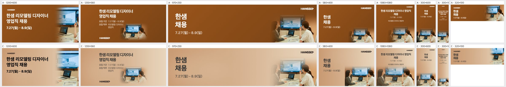
| 규격 | 점수 | 비중 | 크롭 | 배경 | 글자 | 메모 | AI 상자 | 그림 면적·주인공·채움·겹침 |
|---|---|---|---|---|---|---|---|---|
| 1200×600 | 2 | too_small | subject_cut | seam | ok | 오른쪽 끝에 TV와 노트북 조각만 남고 두 인물이 거의 다 잘렸습니다. KV 영역을 캔버스의 40% 이상으로 넓히고 두 여성과 TV가 함께 들어오게 크롭하세요. 왼쪽 경계 그라데이션도 더 부드럽게 풀어야 합니다. | fit | 31% · 29% · 42% · 0% |
| 1250×560 | 3 | too_small | ok | seam | ok | 원형 비네팅 속 KV가 작아서 오른쪽 위와 가운데가 비어 보입니다. KV를 1.5배 키워 오른쪽 하단에서 오른쪽 전체 높이로 확장하고, 동그란 페이드 경계를 없애세요. | rule | 9% · 17% · 28% · 0% · 얼굴 잘림 1 |
| 970×250 | 3 | ok | ok | flat | ok | 인물과 TV는 잘 보이지만 가운데가 넓게 비어 있습니다. KV를 왼쪽으로 확장해 시작점을 캔버스 45% 지점까지 당기거나, 카피를 키워 빈 공간을 줄이세요. | rule | 5% · 26% · 32% · 0% |
| 580×400 | 4 | ok | ok | ok | ok | TV 상단이 조금 잘립니다. KV를 약간 아래로 내려 TV 화면 전체가 보이게 하고, 날짜 텍스트를 한 단계 키우세요. | fit | 29% · 22% · 28% · 0% |
| 1080×1080 | 4 | ok | ok | ok | ok | 카피 블록이 작고 위쪽에 몰려 있습니다. 헤드라인을 1.3배 키우고, KV 상단 페이드를 줄여 TV 윗부분이 흐려지지 않게 하세요. | ok | 55% · 45% · 58% · 0% |
| 300×600 | 3 | too_small | ok | flat | low_contrast | 아래쪽 KV 속 인물이 너무 작고 중간이 비어 있습니다. KV를 세로 절반 이상으로 키워 인물 중심으로 크롭하고, 날짜 텍스트 크기와 대비를 올리세요. | ok | 38% · 27% · 33% · 0% |
| 300×1050 | 2 | too_small | ok | flat | low_contrast | 상단 카피가 지나치게 작아 읽히지 않고 세로 중간이 텅 비어 있습니다. 헤드라인을 2배 이상 키우고 KV를 세로 40% 이상으로 확대해 배치하세요. | ok | 24% · 17% · 32% · 0% |
| 320×100 | 3 | too_small | awkward | seam | ok | 오른쪽 모서리에 TV 조각과 인물 일부만 걸려 어색합니다. 오른쪽 40% 영역에 인물 한 명과 TV가 함께 보이도록 크롭하거나, KV를 빼고 텍스트만으로 구성하세요. | shrink | 28% · 27% · 37% · 0% |
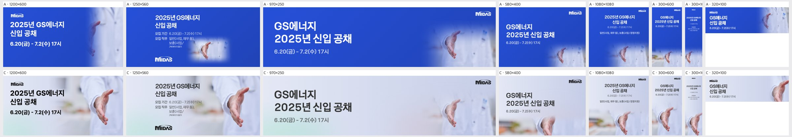
| 규격 | 점수 | 비중 | 크롭 | 배경 | 글자 | 메모 | AI 상자 | 그림 면적·주인공·채움·겹침 |
|---|---|---|---|---|---|---|---|---|
| 1200×600 | 4 | ok | ok | ok | ok | 좌하단에 원본 배경의 녹색 번짐이 남아 있으니 가장자리 그라데이션을 하단까지 넓혀 덮고, 손끝이 하단에서 여유를 갖도록 이미지를 5% 정도 위로 올린다. | ok | 62% · 24% · 40% · 0% |
| 1250×560 | 3 | ok | ok | ok | clipped | 모집 직무의 '경영지원)' 줄이 아래로 잘리니 텍스트 박스 높이를 늘리거나 직무 문구를 한 줄로 줄이고, 로고와의 간격을 다시 맞춘다. | ok | 62% · 26% · 43% · 0% |
| 970×250 | 4 | ok | ok | flat | ok | 중앙부 연회색이 넓게 비어 보이니 손 이미지를 10~15% 키워 왼쪽으로 당기거나, 가운데 그라데이션에 가운 흰색 톤을 조금 더 끌어온다. | rule | 5% · 13% · 28% · 0% |
| 580×400 | 3 | ok | subject_cut | busy | ok | 손이 하단에 걸려 손바닥 아래가 잘리고 좌하단에 흐린 주황·갈색 배경 잡음이 보이니 이미지를 위로 올려 손 전체를 넣고 하단 좌측은 그라데이션으로 덮는다. | fit | 35% · 15% · 30% · 0% |
| 1080×1080 | 3 | ok | subject_cut | busy | ok | 하단 좌측 원본 배경 잡음이 눈에 띄고 손이 바닥에 닿아 보이니 손을 화면 중하단으로 올리고 좌하단 잡음은 블러나 그라데이션으로 정리하며, 직무 문구는 한 단계 키운다. | fit | 46% · 17% · 37% · 0% |
| 300×600 | 3 | ok | subject_cut | ok | ok | 손이 하단 모서리에 붙어 잘리니 손을 화면 하단 1/3 안쪽으로 올리고, 날짜 문구 크기를 키워 가독성을 확보한다. | ok | 60% · 36% · 49% · 0% |
| 300×1050 | 2 | too_small | ok | flat | low_contrast | 글자가 너무 작아 안 읽히고 중간이 텅 비니 제목·날짜를 폭 기준으로 최소 2배 키워 세로 상단 1/3을 채우고, 손 이미지도 키워 중간 여백을 줄인다. | ok | 45% · 26% · 41% · 0% |
| 320×100 | 4 | ok | ok | ok | ok | 날짜 글자가 작으니 한 단계 키우고, 손을 오른쪽 끝에서 약간 안쪽으로 당겨 손끝이 잘리지 않게 한다. | ok | 25% · 18% · 34% · 0% |
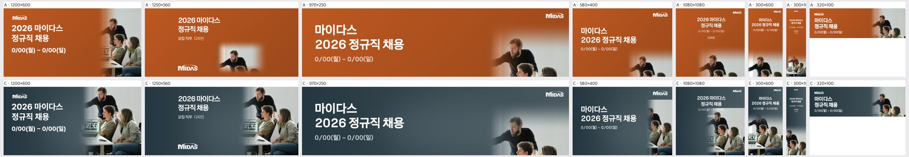
| 규격 | 점수 | 비중 | 크롭 | 배경 | 글자 | 메모 | AI 상자 | 그림 면적·주인공·채움·겹침 |
|---|---|---|---|---|---|---|---|---|
| 1200×600 | 4 | ok | ok | ok | ok | 세 인물 얼굴이 모두 살아 있고 그라데이션 전환도 자연스럽다. 사진 왼쪽 경계의 페이드를 10~15% 더 넓히면 노트북 부분의 밝은 덩어리가 덜 튄다. | ok | 47% · 28% · 44% · 0% |
| 1250×560 | 4 | ok | ok | ok | ok | 구도가 안정적이다. 텍스트 블록과 로고 사이의 큰 빈 공간을 줄이도록 로고를 위로 올리거나 사진을 왼쪽으로 조금 넓혀 균형을 맞춘다. | shrink | 40% · 25% · 34% · 0% |
| 970×250 | 3 | ok | face_cut | ok | ok | 앉은 남성과 여성의 얼굴이 하단에서 잘리고 서 있는 남성만 온전하다. 크롭 기준을 인물 얼굴 영역으로 잡아 세 얼굴이 모두 들어오도록 사진을 축소·상향 배치한다. | rule | 6% · 18% · 32% · 0% · 얼굴 잘림 2 |
| 580×400 | 3 | too_small | subject_cut | ok | ok | 사진이 오른쪽 좁은 띠로 밀려 인물이 양옆에서 잘린다. 사진 영역을 폭의 40% 이상으로 키우고, 타이틀 크기를 한 단계 줄여 자리를 양보한다. | fit | 22% · 15% · 29% · 0% |
| 1080×1080 | 2 | ok | ok | seam | overlap | 사진 상단에 수평 경계선이 그대로 보이고, 날짜와 '디자인' 문구가 사진 밝은 부분 위에 얹혀 읽히지 않는다. 사진 상단에 충분한 그라데이션 페이드를 넣고 텍스트 블록을 위로 올려 사진과 분리한다. | shrink | 40% · 28% · 39% · 0% |
| 300×600 | 4 | ok | ok | ok | ok | 세 인물이 모두 들어와 양호하다. 날짜 글자가 작으니 한 단계 키워 가독성을 확보한다. | ok | 62% · 48% · 61% · 0% |
| 300×1050 | 3 | ok | subject_cut | ok | low_contrast | 상단 텍스트가 지나치게 작아 안 읽히고, 사진은 폭이 좁아 서 있는 남성이 잘린다. 타이틀을 최소 2배로 키우고, 사진은 중앙 인물 기준으로 재크롭한다. | ok | 45% · 21% · 30% · 0% |
| 320×100 | 4 | ok | ok | ok | ok | 작은 규격치고 정리가 잘 됐다. 날짜 글자 대비가 약하니 흰색 불투명도를 100%로 올린다. | rule | 19% · 21% · 37% · 0% · 얼굴 잘림 1 |
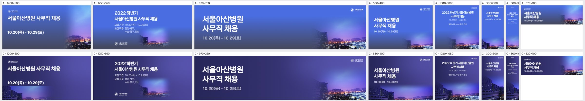
| 규격 | 점수 | 비중 | 크롭 | 배경 | 글자 | 메모 | AI 상자 | 그림 면적·주인공·채움·겹침 |
|---|---|---|---|---|---|---|---|---|
| 1200×600 | 4 | ok | ok | ok | ok | 하단 병원 건물과 날짜 줄이 가깝습니다. 사진을 20px 정도 내리거나 날짜를 위로 올려 건물 불빛과 겹치지 않게 하세요. | fit | 19% · 7% · 21% · 0% |
| 1250×560 | 3 | too_small | awkward | flat | ok | 사진이 중앙 하단에 작은 띠로만 남아 지면 2/3가 단색 남색입니다. 사진을 우측 절반 높이까지 키우고 좌측 병원 건물이 보이도록 크롭하세요. | rule | 9% · 6% · 17% · 0% |
| 970×250 | 4 | ok | ok | ok | ok | 사진과 단색 바탕의 경계가 중앙 부근에서 살짝 드러납니다. 그라데이션 페이드 폭을 넓혀 자연스럽게 이어 주세요. | rule | 5% · 8% · 22% · 0% |
| 580×400 | 4 | ok | ok | ok | ok | 우측 하단 건물이 작게 보입니다. 사진을 10~15% 키워 병원 건물 실루엣을 더 또렷하게 보여 주세요. | shrink | 37% · 15% · 29% · 0% |
| 1080×1080 | 4 | ok | ok | ok | ok | 상단 텍스트 아래 중간 영역이 비어 보입니다. 사진을 위로 끌어올려 하늘 빛번짐이 텍스트 바로 아래까지 닿게 하세요. | ok | 44% · 17% · 34% · 0% |
| 300×600 | 4 | ok | ok | ok | ok | 하단 건물 사진은 좋습니다. 날짜 글자가 작으니 한 단계 키우세요. | ok | 60% · 60% · 73% · 0% |
| 300×1050 | 3 | ok | ok | flat | low_contrast | 모집기간·직무 글자가 너무 작아 읽히지 않고 중간이 텅 비어 있습니다. 텍스트 크기를 1.5배 이상 키우고 세로로 여유 있게 배치하세요. | ok | 45% · 38% · 52% · 0% |
| 320×100 | 3 | ok | awkward | ok | ok | 우측에 하늘 빛번짐만 보여 무엇을 담은 사진인지 알 수 없습니다. 크롭 기준을 하단 병원 건물·야경 불빛 쪽으로 옮기세요. | rule | 18% · 27% · 46% · 0% |
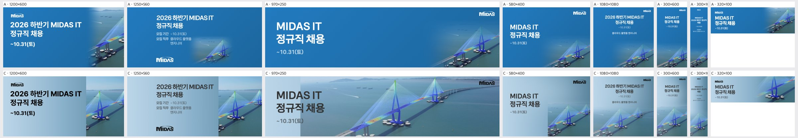
| 규격 | 점수 | 비중 | 크롭 | 배경 | 글자 | 메모 | AI 상자 | 그림 면적·주인공·채움·겹침 |
|---|---|---|---|---|---|---|---|---|
| 1200×600 | 2 | too_small | subject_cut | seam | ok | 사진이 오른쪽 30% 정도에 세로로 딱 끊겨 붙어 경계가 보이고 주탑 상단이 잘린다. 사진 영역을 45%까지 넓히고 왼쪽 하늘색 패널과 사진 사이를 200px 이상 그라데이션으로 섞어라. | fit | 31% · 20% · 31% · 0% |
| 1250×560 | 2 | too_small | subject_cut | seam | ok | 사진 패널의 좌측 경계가 수직선으로 드러나고 주탑이 잘려 케이블 조각만 남는다. 사진을 좌로 확장해 두 주탑이 다 들어오게 하고 경계는 부드러운 페이드로 처리하라. | fit | 32% · 20% · 31% · 0% |
| 970×250 | 3 | ok | ok | seam | low_contrast | 두 주탑이 다 보이는 크롭은 좋지만, 텍스트 영역 바로 오른쪽(x≈900px)에 그라데이션 패널 끝선이 보이고 회색 날짜가 바다 위에서 묻힌다. 패널 끝을 더 길게 페이드시키고 날짜는 진한 남색으로 바꿔라. | shrink | 85% · 47% · 58% · 0% |
| 580×400 | 2 | too_small | awkward | seam | ok | 우하단에 사진이 작은 사각 조각으로 붙어 주탑 일부만 보이고 경계선이 뚜렷하다. 사진을 우측 절반 전체로 키워 주탑을 온전히 넣고 좌측으로 부드럽게 페이드하라. | fit | 30% · 22% · 34% · 0% |
| 1080×1080 | 3 | ok | ok | ok | low_contrast | 사진 전면 배치와 상단 워시는 자연스럽지만, 회색 소형 텍스트(날짜·직무)가 바다색 위에서 약하다. 상단 워시 불투명도를 높이거나 소형 텍스트를 진한 남색에 굵게 바꿔라. | shrink | 53% · 33% · 48% · 0% |
| 300×600 | 3 | ok | subject_cut | ok | low_contrast | 하단에 주탑 하나만 걸리고 케이블 끝이 잘린다. 다리를 위로 10% 올려 주탑 전체가 들어오게 하고 날짜 텍스트 대비를 높여라. | ok | 60% · 42% · 51% · 0% |
| 300×1050 | 2 | ok | ok | flat | low_contrast | 텍스트가 너무 작고 흐려 읽히지 않으며, 상단 절반이 밋밋한 하늘로 비어 보인다. 헤드라인을 2배 이상 키우고 진하게 처리하며, 다리를 화면 중간까지 올려 빈 하늘을 줄여라. | ok | 45% · 35% · 48% · 0% |
| 320×100 | 3 | ok | ok | seam | ok | 사진 좌측 경계가 보인다. 사진과 연청색 배경 사이를 40px 이상 페이드로 섞어라. | ok | 50% · 50% · 65% · 0% |
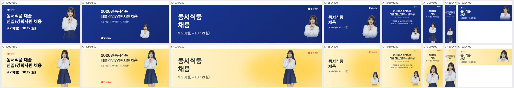
| 규격 | 점수 | 비중 | 크롭 | 배경 | 글자 | 메모 | AI 상자 | 그림 면적·주인공·채움·겹침 |
|---|---|---|---|---|---|---|---|---|
| 1200×600 | 4 | ok | ok | ok | ok | 인물이 텍스트 블록과 너무 붙지 않게 오른쪽으로 40px 정도 옮기고, 스커트 하단에서 잘리는 지점을 무릎 위로 맞춰 정리한다. | ok | 21% · 7% · 21% · 0% |
| 1250×560 | 4 | ok | ok | ok | ok | 하단 좌측에 혼자 떨어진 로고를 상단 타이틀 위로 올려 정보 블록을 하나로 묶는다. | ok | 21% · 7% · 21% · 0% |
| 970×250 | 4 | ok | ok | ok | ok | 타이틀과 인물 사이 빈 공간이 넓으므로 인물을 오른쪽으로 당겨 로고 쪽에 붙인다. 회색 날짜는 한 단계 진하게 올린다. | ok | 21% · 3% · 12% · 0% |
| 580×400 | 2 | too_small | awkward | flat | ok | 우하단 구석에 가슴 위만 작게 걸린 인물을 지면 높이의 85% 이상으로 키운다. 오른쪽 절반에 허리 아래까지 보이게 배치해 빈 노란 면을 채운다. | rule | 10% · 4% · 13% · 0% |
| 1080×1080 | 2 | too_small | awkward | flat | ok | 하단 구석에 머리와 상체 일부만 보이는 인물을 지면 하단 절반 높이로 크게 키워 중앙~우측에 세운다. 직무 안내 회색 소문구는 크기와 명도를 올린다. | rule | 16% · 6% · 30% · 0% |
| 300×600 | 4 | ok | ok | ok | ok | 타이틀 아래 빈 공간을 줄이도록 인물을 약간 위로 올리고, 날짜 글자를 1~2pt 키운다. | ok | 48% · 34% · 42% · 0% |
| 300×1050 | 4 | ok | ok | ok | ok | 상단 타이틀이 지면 대비 너무 작으므로 키운다. 인물 위아래 여백이 균형 잡히도록 인물을 조금 아래로 내린다. | grow | 67% · 22% · 32% · 0% |
| 320×100 | 4 | ok | ok | ok | ok | 날짜가 거의 안 보이는 크기이므로 굵기와 크기를 올린다. 인물은 얼굴이 더 크게 보이도록 상반신 위주로 확대 크롭한다. | grow | 29% · 8% · 20% · 0% |
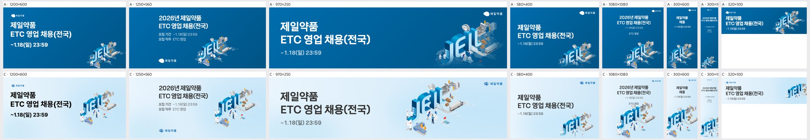
| 규격 | 점수 | 비중 | 크롭 | 배경 | 글자 | 메모 | AI 상자 | 그림 면적·주인공·채움·겹침 |
|---|---|---|---|---|---|---|---|---|
| 1200×600 | 4 | ok | ok | ok | ok | KV 오른쪽 끝의 공장·트럭이 프레임에 바짝 붙어 있으니 KV를 왼쪽으로 30px 정도 옮겨 오른쪽 여백을 확보할 것. | shrink | 35% · 22% · 38% · 0.7% |
| 1250×560 | 4 | ok | ok | ok | ok | KV 아래 오른쪽 영역이 비어 보이니 KV를 10% 키우고 아래쪽으로 내려 하단 로고와 높이를 맞출 것. | shrink | 35% · 24% · 39% · 0.8% |
| 970×250 | 4 | ok | ok | ok | ok | 우상단 로고가 KV 공장 라인과 너무 가까우니 KV를 왼쪽으로 옮기거나 로고와 최소 20px 간격을 둘 것. | ok | 51% · 29% · 44% · 0% |
| 580×400 | 3 | too_small | subject_cut | ok | ok | KV가 우하단 구석에 작게 붙어 하단 JEIL 글자와 실험실 인물이 잘리니, KV를 프레임 안으로 올려 전체가 보이게 하고 20% 키울 것. | rule | 21% · 13% · 28% · 0% |
| 1080×1080 | 3 | ok | subject_cut | ok | ok | KV 하단의 실험실과 인물이 프레임 밖으로 잘리니, 텍스트 블록을 위로 올리고 KV 전체가 들어오도록 위치를 올릴 것. | ok | 50% · 28% · 42% · 0% |
| 300×600 | 3 | ok | subject_cut | ok | ok | KV가 좌우와 하단에서 모두 잘리니, 폭에 맞춰 축소해 전체를 보이게 하고 텍스트 아래 빈 공간으로 끌어올릴 것. | ok | 55% · 42% · 50% · 0% |
| 300×1050 | 2 | too_small | subject_cut | flat | low_contrast | 상단 텍스트가 판독 불가 수준으로 작고 중간이 통째로 비어 있으니, 헤드라인을 2배 이상 키우고 KV를 세로 중앙에 배치해 하단 잘림을 없앨 것. | ok | 36% · 22% · 33% · 0% |
| 320×100 | 3 | ok | awkward | ok | ok | KV 오른쪽이 잘려 JEIL 일부만 보이니, KV 높이를 배너 높이에 맞춰 축소하고 우측 여백 안에 전체를 넣을 것. | ok | 25% · 10% · 30% · 0% |
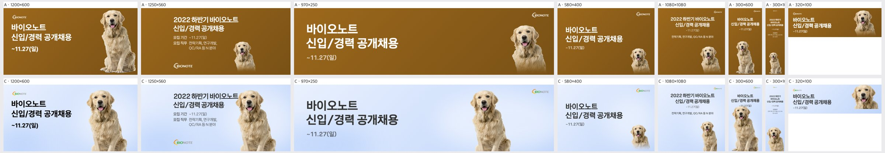
| 규격 | 점수 | 비중 | 크롭 | 배경 | 글자 | 메모 | AI 상자 | 그림 면적·주인공·채움·겹침 |
|---|---|---|---|---|---|---|---|---|
| 1200×600 | 4 | ok | ok | ok | ok | 강아지가 앞발 아래에서 잘려 하단이 답답하므로 KV를 5~8% 줄이고 위로 올려 발끝까지 보이게 하고, 라이트블루 배경에 미세한 비네팅을 더해 깊이를 준다. | ok | 32% · 15% · 30% · 0% |
| 1250×560 | 2 | too_big | ok | ok | overlap | 헤드라인 '2022 하반기 바이오노트' 끝이 강아지 귀에 닿으므로 KV를 15% 줄여 오른쪽 끝으로 붙이거나 텍스트 블록 최대폭을 KV 좌측 경계보다 40px 이상 짧게 제한한다. | ok | 32% · 13% · 33% · 1.1% |
| 970×250 | 4 | ok | ok | ok | ok | 머리는 잘 살았지만 강아지와 우상단 로고 사이가 좁으므로 KV를 왼쪽으로 30px 옮기고, 헤드라인과 KV 사이의 빈 중앙부를 줄이도록 텍스트 크기를 약간 키운다. | ok | 32% · 9% · 23% · 0% |
| 580×400 | 3 | too_small | ok | flat | ok | 강아지가 우하단 구석에 작게 박혀 지면 오른쪽 위가 비므로 KV 높이를 지면의 85% 이상으로 키워 우측 하단에 앵커링하고, 텍스트는 좌측 2/3 안에 유지한다. | rule | 14% · 6% · 22% · 0% |
| 1080×1080 | 3 | too_small | ok | flat | ok | 텍스트 아래가 넓게 비고 강아지가 작으므로 KV를 하단 중앙에 지면 높이 55~60%로 키워 배치하고, 상단 텍스트 블록과의 간격을 좁혀 정사각 구도를 채운다. | fit | 21% · 7% · 30% · 0% |
| 300×600 | 3 | too_big | ok | ok | overlap | 강아지 머리가 날짜 '~11.27(일)' 줄 바로 아래까지 올라와 겹쳐 보이므로 KV를 10% 줄이고 하단으로 내려 텍스트와 최소 20px 간격을 확보한다. | grow | 64% · 24% · 36% · 0% |
| 300×1050 | 3 | too_small | ok | flat | low_contrast | 글자가 너무 작고 중간이 비며 강아지가 하단에 작으므로 헤드라인을 1.5배 키우고 KV를 지면 높이 45%로 키워 하단에 크게 배치한다. | ok | 34% · 9% · 27% · 0% |
| 320×100 | 4 | ok | ok | ok | ok | 날짜 텍스트가 작아 모바일에서 안 읽힐 수 있으므로 서브카피를 빼고 헤드라인과 날짜만 키우며, 강아지 머리 위 여백을 4~6px 확보한다. | grow | 31% · 12% · 31% · 0% |
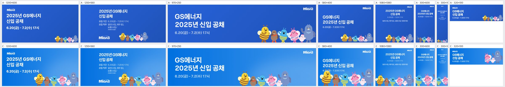
| 규격 | 점수 | 비중 | 크롭 | 배경 | 글자 | 메모 | AI 상자 | 그림 면적·주인공·채움·겹침 |
|---|---|---|---|---|---|---|---|---|
| 1200×600 | 4 | ok | ok | ok | ok | 캐릭터 떼가 날짜 줄 바로 아래까지 올라와 꿀벌 더듬이와 날짜 사이 여백이 거의 없다. 그림을 10~15px 내리거나 오른쪽으로 밀어 숨통을 확보할 것. | ok | 23% · 22% · 38% · 0% |
| 1250×560 | 2 | ok | ok | ok | clipped | 모집 직무 '보훈(사업/경영지원)' 줄이 텍스트 박스 하단에서 잘린다. 직무 줄바꿈을 줄이거나 텍스트 영역 높이를 늘려 전부 보이게 할 것. | ok | 23% · 20% · 35% · 0% |
| 970×250 | 4 | ok | ok | ok | ok | 캐릭터 발이 하단에서 잘린다. 그림을 5~10% 축소하거나 위로 올려 발끝까지 보이게 하면 완성도가 올라간다. | grow | 31% · 14% · 29% · 0% |
| 580×400 | 2 | too_big | ok | ok | overlap | 노란 꿀벌 머리와 더듬이가 날짜 '6.20(금)' 위를 덮는다. 캐릭터 떼를 15% 정도 축소해 날짜 아래로 내리거나 텍스트 블록을 위로 올릴 것. | grow | 51% · 15% · 30% · 0% |
| 1080×1080 | 3 | too_small | subject_cut | flat | ok | 캐릭터가 하단 띠에만 몰려 화면 중앙이 비고, 왼쪽 꿀벌이 가장자리에서 잘린다. 그림을 키워 하단 1/3을 채우고, 그룹 전체가 프레임 안에 들어오게 중앙 정렬할 것. | ok | 35% · 12% · 32% · 0% |
| 300×600 | 3 | ok | subject_cut | ok | ok | 노란 꿀벌과 곰이 좌우에서 잘려 조각만 남는다. 핵심 2~3마리(파란 벌·분홍 벌 등)만 골라 온전히 보이게 재배치할 것. | ok | 43% · 34% · 48% · 0% |
| 300×1050 | 2 | too_small | subject_cut | flat | low_contrast | 글자가 너무 작아 안 읽히고, 캐릭터는 하단에 잘린 채 작게 놓여 세로 공간 대부분이 빈다. 타이틀을 2배 이상 키우고 캐릭터 1~2마리를 크게 세워 세로를 채울 것. | ok | 38% · 29% · 44% · 0% |
| 320×100 | 3 | ok | awkward | ok | ok | 분홍 벌 반쪽과 곰만 보여 무슨 장면인지 모호하다. 그룹 전체를 축소해 넣거나 대표 캐릭터 한 마리를 온전히 보이게 크롭할 것. | grow | 34% · 11% · 27% · 0% |
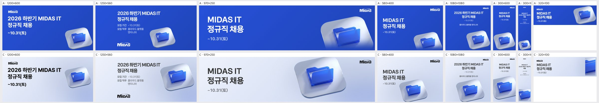
| 규격 | 점수 | 비중 | 크롭 | 배경 | 글자 | 메모 | AI 상자 | 그림 면적·주인공·채움·겹침 |
|---|---|---|---|---|---|---|---|---|
| 1200×600 | 4 | ok | ok | ok | ok | 아이콘의 밝은 회색 베이스가 라벤더 배경에 묻히므로, 아이콘 아래에 소프트 섀도를 넣거나 배경 우측을 한 톤 진하게 해 분리감을 확보하라. | fit | 21% · 15% · 26% · 0% |
| 1250×560 | 4 | ok | ok | ok | ok | 아이콘 베이스 우측이 프레임에 바짝 붙어 있으니, 아이콘을 좌측으로 20~30px 옮겨 여백을 확보하라. | shrink | 24% · 21% · 33% · 0.9% |
| 970×250 | 4 | too_big | ok | ok | ok | 아이콘이 중앙을 크게 차지해 상하가 빠듯하고 우측은 로고만 남아 비어 있으니, 아이콘을 85% 정도로 줄이고 우측으로 옮겨 상하 여백을 주라. | grow | 56% · 28% · 39% · 0% |
| 580×400 | 3 | ok | subject_cut | ok | ok | 아이콘 베이스가 하단·우측에서 잘리고 날짜 문구와 붙어 있으니, 아이콘을 10% 줄여 위로 올리고 텍스트 블록과 간격을 벌려라. | ok | 36% · 22% · 33% · 0% |
| 1080×1080 | 3 | ok | subject_cut | flat | ok | 하단에 걸린 아이콘의 베이스가 잘리고 중앙은 비어 보이니, 아이콘을 키워 화면 중앙 하단에 온전히 앉히고 헤드라인 크기를 키워라. | ok | 36% · 31% · 46% · 0% |
| 300×600 | 3 | ok | subject_cut | flat | ok | 아이콘이 우측·하단에서 잘리고 텍스트와 아이콘 사이 중간 영역이 비니, 아이콘을 온전히 보이게 중앙 정렬하고 위로 올려 간격을 줄여라. | grow | 56% · 17% · 26% · 0% |
| 300×1050 | 2 | too_small | subject_cut | flat | ok | 상단 텍스트가 판독이 어려울 만큼 작고 아이콘도 작아 세로 중간이 통째로 비니, 헤드라인을 2배 이상 키우고 아이콘을 폭에 맞춰 키운 뒤 세로 중앙부에 배치하라. | ok | 23% · 19% · 31% · 0% |
| 320×100 | 2 | ok | awkward | seam | ok | 아이콘이 우측 끝에 세로 조각으로만 잘려 무엇인지 알 수 없고 베이스 경계선이 보이니, 아이콘 전체를 높이 80% 크기로 축소해 우측에 온전히 넣어라. | ok | 14% · 12% · 27% · 0% |
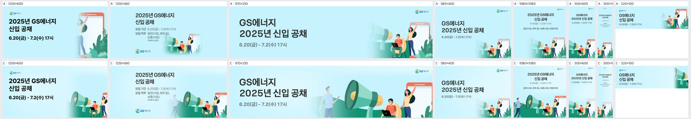
| 규격 | 점수 | 비중 | 크롭 | 배경 | 글자 | 메모 | AI 상자 | 그림 면적·주인공·채움·겹침 |
|---|---|---|---|---|---|---|---|---|
| 1200×600 | 3 | too_small | subject_cut | ok | ok | 오른쪽 위가 비어 보이니 키비주얼을 120~130%로 키워 오른쪽 아래에 붙이세요. 오른쪽 끝에서 잘린 손 든 여성이 다 들어오도록 왼쪽으로 옮기세요. | fit | 39% · 19% · 36% · 0% |
| 1250×560 | 2 | ok | ok | seam | clipped | 모집 직무 마지막 줄 '경영지원)'이 잘립니다. 본문 영역 높이를 늘리거나 직무 문구를 한 줄로 줄이세요. 텍스트 쪽에서 반투명하게 비치는 걷는 남자는 빼거나 불투명하게 처리하세요. | shrink | 50% · 23% · 39% · 0% |
| 970×250 | 4 | ok | ok | seam | ok | 왼쪽 걷는 남자가 페이드 그라데이션에 걸려 유령처럼 보입니다. 페이드 시작점을 남자 왼쪽으로 옮기거나 남자를 완전히 보이게 하세요. 아래 가장자리에 붙은 노트북 인물은 10px 정도 올리세요. | ok | 59% · 39% · 55% · 0% |
| 580×400 | 3 | too_small | subject_cut | ok | ok | 오른쪽 아래 그림이 너무 작고 인물이 잘립니다. 키비주얼을 1.4배로 키워 메가폰과 인물 3명이 보이도록 오른쪽 하단 절반을 채우세요. | rule | 6% · 0% · 16% · 0% |
| 1080×1080 | 4 | ok | ok | ok | ok | 그림 배치는 좋습니다. 다만 제목과 직무 문구가 지면에 비해 작으니 제목을 1.3배, 직무 줄을 1.5배 키워 상단 여백을 채우세요. | ok | 58% · 43% · 63% · 0% |
| 300×600 | 3 | ok | subject_cut | ok | ok | 메가폰과 여성이 좌우에서 잘립니다. 키비주얼을 약간 줄이고 중앙에 맞춰 메가폰과 앉은 인물이 한 덩어리로 보이게 하세요. | rule | 21% · 29% · 43% · 0% |
| 300×1050 | 2 | too_small | subject_cut | flat | low_contrast | 중간이 통째로 비고 글자가 너무 작아 읽히지 않습니다. 제목을 2배 이상 키우고, 키비주얼을 세로 하단 40%까지 확대해 인물이 잘리지 않게 세로 배치하세요. | rule | 17% · 8% · 23% · 0% |
| 320×100 | 2 | too_small | awkward | ok | ok | 오른쪽 끝에 나뭇잎 조각만 보여 의미가 없습니다. A처럼 폰을 든 여성과 앉은 인물이 보이도록 크롭 기준을 인물 쪽으로 옮기세요. | shrink | 21% · 17% · 33% · 0% |
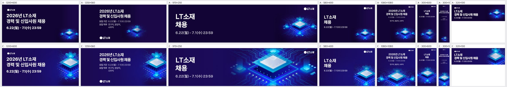
| 규격 | 점수 | 비중 | 크롭 | 배경 | 글자 | 메모 | AI 상자 | 그림 면적·주인공·채움·겹침 |
|---|---|---|---|---|---|---|---|---|
| 1200×600 | 4 | ok | ok | ok | ok | 칩 오른쪽 끝이 지면 가장자리에 살짝 걸리니 키비주얼을 왼쪽으로 5~8% 옮겨 칩 전체와 오른쪽 여백을 확보할 것. | fit | 31% · 21% · 42% · 0% |
| 1250×560 | 3 | ok | subject_cut | ok | ok | 메인 칩이 오른쪽 끝에서 절반 가까이 잘리니 키비주얼을 왼쪽으로 15% 정도 당겨 칩 윗면 전체가 프레임 안에 들어오게 할 것. | fit | 32% · 21% · 38% · 0% |
| 970×250 | 4 | ok | ok | ok | ok | 우상단 로고가 회로선 위에 얹혀 산만하니 로고 뒤 배경을 살짝 어둡게 눌러 주거나 칩을 아래로 내려 로고 주변을 비울 것. | ok | 66% · 38% · 46% · 0% |
| 580×400 | 3 | ok | subject_cut | ok | ok | 칩이 우하단 모서리에서 아래·오른쪽이 함께 잘리니 크기를 10~15% 줄이고 위로 올려 칩 윗면과 하단 기판이 모두 보이게 할 것. | fit | 26% · 22% · 31% · 0% |
| 1080×1080 | 3 | ok | subject_cut | ok | ok | 칩 하단이 프레임 밑에서 잘려 윗부분만 남으니 칩을 위로 10%가량 올리고 카피 블록 간격을 조금 줄여 칩 전체를 화면 안에 넣을 것. | fit | 52% · 36% · 52% · 0% |
| 300×600 | 4 | ok | ok | ok | ok | 날짜 글씨가 작아 가독성이 떨어지니 한 단계 키우고, 칩은 지금 위치를 유지할 것. | ok | 60% · 42% · 50% · 0% |
| 300×1050 | 2 | ok | ok | ok | low_contrast | 상단 카피와 날짜가 너무 작아 읽히지 않으니 카피를 2배 이상 키워 2~3줄로 재배치하고, 가운데 빈 공간에 날짜·직무를 내려 채울 것. | ok | 45% · 27% · 40% · 0% |
| 320×100 | 4 | ok | ok | ok | ok | 칩 오른쪽 일부가 잘리니 키비주얼을 약간 축소하거나 왼쪽으로 당겨 칩 윗면이 완전히 보이게 할 것. | rule | 17% · 38% · 59% · 0% |
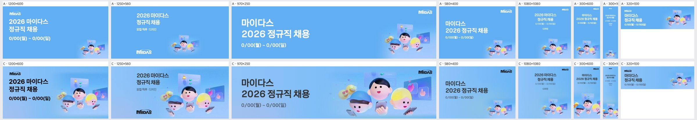
| 규격 | 점수 | 비중 | 크롭 | 배경 | 글자 | 메모 | AI 상자 | 그림 면적·주인공·채움·겹침 |
|---|---|---|---|---|---|---|---|---|
| 1200×600 | 4 | ok | ok | ok | ok | 오른쪽 그룹을 왼쪽으로 약 20px 옮겨 왼쪽 이모지와 '정규직 채용' 사이 간격을 넓히고, 아래 휴대폰과 손이 잘리지 않게 그룹을 5% 줄인다. | ok | 52% · 20% · 35% · 0.4% |
| 1250×560 | 3 | too_big | subject_cut | ok | ok | 그룹을 약 85%로 줄이고 오른쪽으로 옮겨 '모집 직무 디자인' 옆 이모지와의 겹침을 피하고, 아래 손과 휴대폰이 프레임 안에 들어오게 한다. | grow | 70% · 28% · 37% · 0% |
| 970×250 | 4 | ok | ok | ok | ok | 아래 휴대폰이 잘리므로 그룹을 10% 줄여 위로 올리고, 위쪽 반만 보이는 카드는 아예 빼거나 온전히 보이게 정리한다. | ok | 52% · 31% · 45% · 0% |
| 580×400 | 3 | too_small | ok | flat | ok | 오른쪽 아래 구석의 그룹을 약 1.6배 키워 오른쪽 하단 절반을 채우고, 텍스트 오른쪽의 빈 하늘 영역을 줄인다. | rule | 10% · 14% · 29% · 0% · 얼굴 잘림 1 |
| 1080×1080 | 2 | too_small | ok | flat | ok | 그룹을 폭의 70% 이상으로 키워 화면 중앙 아래에 두고, 타이틀을 약 2배 키워 가운데 빈 공간을 없앤다. | rule | 15% · 23% · 34% · 0% · 얼굴 잘림 1 |
| 300×600 | 3 | ok | subject_cut | flat | ok | 그룹을 하단에서 15% 위로 올려 손과 휴대폰이 잘리지 않게 하고, 타이틀을 키워 텍스트와 그림 사이 빈 가운데를 메운다. | ok | 55% · 30% · 43% · 0% |
| 300×1050 | 2 | too_small | ok | flat | low_contrast | 타이틀을 지금의 약 2.5배로 키우고 색을 진하게 바꾸며, 그룹을 폭에 꽉 차게 키워 세로 중앙 아래로 올린다. | ok | 35% · 7% · 15% · 0% |
| 320×100 | 3 | ok | ok | ok | low_contrast | 작은 날짜 글씨를 굵고 진한 남색으로 바꿔 대비를 높이고, 그룹을 높이에 맞춰 조금 키운다. | rule | 17% · 7% · 23% · 0% · 얼굴 잘림 1 |
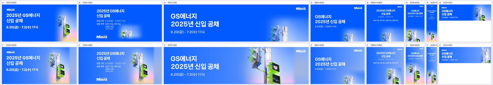
| 규격 | 점수 | 비중 | 크롭 | 배경 | 글자 | 메모 | AI 상자 | 그림 면적·주인공·채움·겹침 |
|---|---|---|---|---|---|---|---|---|
| 1200×600 | 4 | ok | ok | ok | ok | 신호등 하단 핑크·옐로 그라데이션이 우측 하단에만 몰려 얼룩처럼 보이므로 하단 전체로 부드럽게 넓히고, KV를 10% 정도 키워 보행신호등이 더 또렷하게 보이게 할 것. | shrink | 34% · 19% · 36% · 0% |
| 1250×560 | 2 | ok | ok | seam | clipped | 모집 직무 줄의 '보훈(사업/경영지원)'이 아래에서 잘리니 텍스트 박스 높이를 늘리거나 직무 문구를 한 줄로 줄이고, KV 뒤의 밝은 사각 영역 왼쪽 경계를 넓은 페더로 지울 것. | shrink | 34% · 16% · 32% · 0% |
| 970×250 | 3 | ok | ok | seam | ok | KV 주변의 밝은 패치가 왼쪽에서 세로 경계로 끊겨 보이므로 배경 블루와 그라데이션으로 이어 붙이고, 하단 보행신호등이 바닥에서 잘리지 않게 KV를 위로 10~15px 올릴 것. | ok | 40% · 23% · 38% · 0% |
| 580×400 | 2 | too_small | awkward | flat | ok | 우하단에 신호등 윗부분만 조금 보여 정체를 알 수 없으므로 KV를 1.8배 정도 키우고 우측 세로 중앙에 배치해 보행신호등 두 개가 보이게 할 것. | rule | 5% · 6% · 21% · 0% |
| 1080×1080 | 2 | too_small | subject_cut | flat | low_contrast | 상단 텍스트가 정사각형에 비해 너무 작고 KV는 우하단 구석에서 잘려 있으니, 헤드라인을 1.5배 키우고 KV를 하단 중앙 쪽으로 크게 올려 신호등 전체가 보이게 할 것. | fit | 23% · 15% · 35% · 0% |
| 300×600 | 3 | ok | subject_cut | ok | ok | 보행신호등 아랫부분이 하단에서 잘리므로 KV를 위로 올리거나 살짝 줄여 신호등 하단과 기둥 그라데이션까지 들어오게 할 것. | ok | 65% · 38% · 51% · 0% |
| 300×1050 | 2 | too_small | ok | flat | low_contrast | 상단 텍스트가 읽을 수 없을 만큼 작고 중간이 텅 비었으니, 헤드라인을 2배 이상 키우고 KV를 세로 중앙~하단 절반 크기로 확대해 빈 블루 영역을 채울 것. | ok | 41% · 19% · 34% · 0% |
| 320×100 | 3 | ok | awkward | seam | ok | 우측에 기둥과 신호등 일부만 보여 조각처럼 보이므로 보행신호등(하트)을 중심으로 크롭하고, KV 뒤 밝은 세로 띠를 배경 블루에 맞춰 경계가 안 보이게 할 것. | ok | 20% · 16% · 33% · 0% |
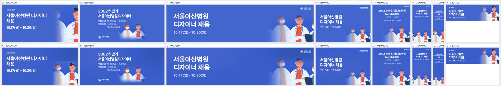
| 규격 | 점수 | 비중 | 크롭 | 배경 | 글자 | 메모 | AI 상자 | 그림 면적·주인공·채움·겹침 |
|---|---|---|---|---|---|---|---|---|
| 1200×600 | 4 | ok | ok | ok | ok | 가운데 두 의사가 얼굴까지 온전히 들어와 A보다 낫다. 다만 우상단이 비어 보이니 인물을 10~15% 키우고 위로 올려 오른쪽 절반을 채우고, 오른쪽 끝에 잘린 인물은 안쪽으로 당긴다. | fit | 22% · 21% · 35% · 0% |
| 1250×560 | 3 | too_small | ok | flat | ok | 인물이 텍스트 블록 아래 좁은 틈에 작게 끼어 있고 오른쪽 40%가 빈 파랑이다. 인물을 오른쪽 영역으로 옮겨 높이의 80% 이상으로 키운다. | rule | 9% · 16% · 27% · 0% · 얼굴 잘림 3 |
| 970×250 | 4 | ok | ok | ok | ok | 구성은 좋다. 가운데 텍스트와 인물 사이 빈 구간이 넓으니 인물 묶음을 왼쪽으로 조금 당기고, 오른쪽 끝에 잘린 인물 조각은 정리한다. | rule | 8% · 25% · 40% · 0% · 얼굴 잘림 2 |
| 580×400 | 3 | too_small | subject_cut | ok | ok | 인물이 우하단에 작게 몰리고 하단에서 가슴 위로 잘린다. 인물을 1.3배 키워 오른쪽 하단 절반을 채우고 얼굴 4개가 모두 온전히 보이게 맞춘다. | rule | 6% · 11% · 26% · 0% · 얼굴 잘림 2 |
| 1080×1080 | 3 | too_small | subject_cut | flat | ok | 텍스트와 인물 사이 화면 중앙이 크게 비어 있다. 인물을 화면 하단 50%까지 키워 올리고 타이틀 크기도 1.3배 키운다. | rule | 10% · 17% · 35% · 0% · 얼굴 잘림 2 |
| 300×600 | 3 | too_small | subject_cut | flat | ok | 인물이 하단에 작게 붙어 중간이 비어 있다. 4명 대신 가운데 2명만 크게 크롭해 하단 45%를 채운다. | rule | 16% · 18% · 32% · 0% |
| 300×1050 | 2 | too_small | awkward | flat | low_contrast | 부가 텍스트가 너무 작아 읽히지 않고 인물은 하단에 조각으로만 보인다. 타이틀은 최소 24px, 부가 정보는 12px 이상으로 키우고, 인물 1~2명을 세로로 크게 크롭해 하단 40%를 채운다. | shrink | 26% · 5% · 19% · 0% |
| 320×100 | 3 | ok | subject_cut | ok | ok | 오른쪽 인물이 가장자리에 걸려 반쯤 잘린다. 얼굴이 온전한 2명만 오른쪽 안쪽으로 배치하고 날짜 글자를 1~2px 키운다. | rule | 18% · 22% · 42% · 0% · 얼굴 잘림 1 |